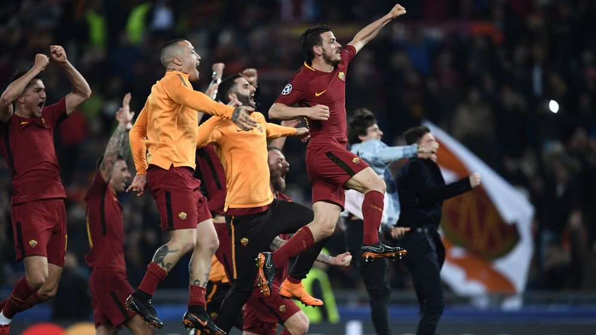

Bagaimana Rasanya Diserang Sekawanan Serigala, Coba Tanya Barcelona

AFP.©ist
AS Roma menang 3-0 saat menjamu Barcelona di Stadio Olimpico pada leg kedua babak perempat final Liga Champions 2017/18, Rabu (11/4). Roma menghabisi Barcelona dan lolos ke semifinal dengan keunggulan gol tandang dalam agregat 4-4.
Roma menekan dari menit awal dan membuat Barcelona kesulitan. Sesuai julukannya, serigala-serigala Roma menyerang secara berkelompok hingga akhirnya menaklukkan calon mangsa mereka.Hampir semua ambil bagian dalam upaya untuk melumpuhkan lawan.

Skuad Roma Merayakan Kemenangan.©ist
Barcelona unggul possession 56%. Namun Roma lebih banyak melepaskan tembakan. Roma mencatatkan 17 shots, sedangkan Barcelona 9. Torehan 17 shots itu pun tercatat atas nama sembilan pemain berbeda. Edin Dzeko empat kali, Radja Nainggolan dan Patrik Schick masing-masing tiga kali, Daniele De Rossi dua kali, sedangkan Kostas Manolas, Aleksandar Kolarov, Kevin Strootman, Stephan El Shaarawy dan Cengiz Under masing-masing mengancam sekali.
Itu beda dengan Barcelona, yang shots-nya cuma dicatatkan oleh lima pemain, yakni Lionel Messi (5), Sergi Roberto, Andres Iniesta, Luis Suarez dan Ousmane Dembele. Alisson sebagai benteng terakhir Roma mampu menetralisir semua ancaman yang mengarah ke gawangnya. Sementara itu, Marc-Andre ter Stegen tak mampu berbuat banyak ketika diserang bertubi-tubi oleh pemain-pemain Roma dari semua lini.
Statistik Formasi Pertandingan.©ist
Edin Dzeko membuka skor memanfaatkan assist Daniele De Rossi di menit 6, lalu membuat timnya mendapatkan penalti yang dieksekusi sempurna oleh De Rossi pada menit 58. Di menit 82, meneruskan corner pemain pengganti Cengiz Under, Kostas Manolas menanduk bola masuk dan memastikan kelolosan Roma. Untuk pertama kalinya sejak April 2017, Barcelona kebobolan dua gol atau lebih dalam satu pertandingan Liga Champions.
Pada leg pertama di Camp Nou, Barcelona menang 4-1 lewat bunuh diri Daniele De Rossi dan Kostas Manolas serta gol-gol Gerard Pique dan Luis Suarez. Roma hanya bisa mencetak satu gol melalui Edin Dzeko. Menang 3-0 di leg kedua, Roma pun menjadi semifinalis untuk pertama kalinya sejak 1983/84. Musim itu, Roma lolos sampai final namun gagal juara setelah kalah adu penalti melawan Liverpool dalam partai puncak yang digelar di rumah mereka sendiri - Olimpico. "Malam ini kami telah menampilkan performa terbaik," kata Dzeko seperti dilansir situs resmi klub. "Namun performa yang sama bisa saja muncul kembali dalam beberapa pekan ke depan."
"Kami bisa kalahkan siapa saja jika bermain seperti malam ini." "Kami juga sebenarnya bisa saja mencetak gol lebih banyak. Kami menekan mereka dari awal. Saya tak pernah melihat Barcelona dibuat kesulitan seperti ini sebelumnya." Roma menjadi tim ketiga dalam sejarah Liga Champions yang mampu lolos dari defisit tiga gol atau lebih di fase knockout. Dua tim lainnya adalah Deportivo La Coruna (lawan AC Milan) musim 2003/04 dan Barcelona (lawan PSG) musim 2016/17 kemarin.
Musim lalu, Barcelona menampilkan salah satu aksi comeback terhebat. Kali ini, mereka yang jadi korban. "Ini sangat menyakitkan, seperti tidak nyata. Ini sangat sulit diterima. Dengan keunggulan yang kami miliki, kami justru tersingkir karena kami benar-benar main buruk. Liga Champions menghukum Anda untuk itu," kata kapten Barcelona Andres Iniesta.
Gelandang Barcelona Sergio Busquets berujar: "Mereka bermain total karena butuh gol-gol. Mereka menunjukkan sikap yang kami tak tahu bagaimana harus meresponsnya. Untuk alasan itu, mereka lebih baik di segala aspek malam ini." "Tak perlu ditanya lagi, ini kekalahan yang menyakitkan," tutur pelatih Barcelona Ernesto Valverde. "Kami semua punya keinginan untuk menang, tapi hanya satu tim yang berdiri sampai akhir." "Roma, terutama di menit-menit awal, menekan kami. Mereka membuat kami terpaksa bermain dengan bola-bola panjang." Pressing game Roma benar-benar membuat Barcelona tak berdaya. Mereka kesulitan mengembangkan permainan. "Kami tak mampu mengatasi pressing mereka. Timing gol-gol mereka sangat krusial. Ini hari buruk bagi kami. Jujur saja, mereka sangat bagus dan kami tidak." Di Olimpico, Barcelona telah merasakan salah satu malam paling buruk di Eropa. Di tempat ini, mereka tahu bagaimana rasanya diserang oleh sekawanan serigala. (bola/gia)
ADS
ADS